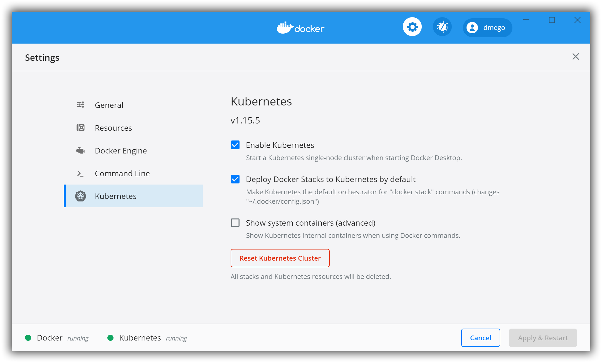

原文连接:https://www.cnblogs.com/dmego/p/12082013.html
- 原文链接（转载请注明出处）：将WSL2作为生产力工具
适用于Linux的Windows子系统 (WSL) 是Windows 10新增的功能，使用它可以直接在Windows上运行Linux命令。而WSL 2是WSL的一个新版本，它支持适用于Linux的Windows子系统在Windows上运行ELF64 Linux二进制文件。 它的主要目标是提高文件系统的性能，并增加系统调用的完全兼容性。WSL 2使用最新和最高的虚拟化技术在轻型实用程序虚拟机（VM）内部运行Linux内核。
启用并配置 WSL 2
win 版本要求
WSL 2 仅在 Windows 10 18917 或更高版本中可用，如果版本太低，可以加入 Windows Insider 升级 Windows ，我们可以在 cmd 中使用 ver 来检查当前 win的版本。
启用虚拟机平台可选组件
在 powerShell 中以管理员身份运行下面命令
dism.exe /online /enable-feature /featurename:Microsoft-Windows-Subsystem-Linux /all /norestart
dism.exe /online /enable-feature /featurename:VirtualMachinePlatform /all /norestart运行完成之后，请重启电脑完成安装.
设置 WSL 发行版
如果想要将默认的WSL发行版设置成 WSL 2，在 powerShell 中使用下面命令
wsl --set-default-version 2如果想要设置某一个发行版为WSL2，在 powerShell 中使用下面命令，将 <Distro> 换成你想要设置的发行版即可，例如 Ubuntu-18.04
wsl --set-version <Distro> 2验证使用的WSL版本
wsl -l -v下载安装 Ubuntu-18.04
在 Windows 应用商店里搜索 Ubuntu-18.04 ，然后下载,下载完成之后打开 Ubuntu-18.04 ，这时会先进行一些初始化安装的设置，然后就会让你设置新的 UNIX用户名和密码，设置完成之后，就进入了 linux 子系统。验证是否是 WSL 2 我们只需要在 powerShell 下输入 wsl -l -v ,输出内容如下，这里 VERSION 为 2 代表启用了 WSL 2
NAME STATE VERSION
* Ubuntu-18.04 Running 2Ubuntu-18.04 更换国内源
首先备份一下默认的源
cp /etc/apt/sources.list /etc/apt/sourses.list.bak更换默认源为阿里源, 使用 sudo vim /etc/apt/sources.list 命令编辑，删除原来的内容，添加下面的阿里源信息
deb http://mirrors.aliyun.com/ubuntu/ bionic main restricted universe multiverse
deb http://mirrors.aliyun.com/ubuntu/ bionic-security main restricted universe multiverse
deb http://mirrors.aliyun.com/ubuntu/ bionic-updates main restricted universe multiverse
deb http://mirrors.aliyun.com/ubuntu/ bionic-proposed main restricted universe multiverse
deb http://mirrors.aliyun.com/ubuntu/ bionic-backports main restricted universe multiverse
deb-src http://mirrors.aliyun.com/ubuntu/ bionic main restricted universe multiverse
deb-src http://mirrors.aliyun.com/ubuntu/ bionic-security main restricted universe multiverse
deb-src http://mirrors.aliyun.com/ubuntu/ bionic-updates main restricted universe multiverse
deb-src http://mirrors.aliyun.com/ubuntu/ bionic-proposed main restricted universe multiverse
deb-src http://mirrors.aliyun.com/ubuntu/ bionic-backports main restricted universe multiverse更换源之后，使用下面的命令更新一下
sudo apt-get update
sudo apt-get upgade安装配置 Windows Terminal
下载 Windows Terminal
Windows Terminal 是win推出的最新的一款命令行工具，可以在应用商店里搜索并下载，安装完成打开界面如下
关于其的介绍这里就不多展开，这里记录如何使用Windows Terminal 连接WSL 2并安装配置zsh。
安装 zsh
# 安装 zsh
sudo apt-get install zsh
# 修改默认的 Shell 为 zsh
chsh -s /bin/zsh安装 oh-my-zsh
oh-my-zsh用于快速配置zsh，进入官网或者Github可以了解其基本使用及其丰富的主题使用，安装只需要执行下面代码即可
sh -c "$(curl -fsSL https://raw.githubusercontent.com/ohmyzsh/ohmyzsh/master/tools/install.sh)"安装zsh-syntax-higlighting语法高亮插件
# 下载
git clone https://github.com/zsh-users/zsh-syntax-highlighting.git
# 移动到 plugins 文件夹中
mv -p zsh-syntax-highlighting $ZSH_CUSTOM/plugins
# 配置环境变量
cd ~
vim .zshrc
#在 plugins 一列中添加 zsh-syntax-highlighting，如下
plugins=(
git
zsh-syntax-highlighting
)
# 在文件最后添加
source $ZSH_CUSTOM/plugins/zsh-syntax-highlighting/zsh-syntax-highlighting.zsh
# 配置生效
source ~/.zshrc安装zsh-autosuggestions语法历史记录插件
# 下载
git clone https://github.com/zsh-users/zsh-autosuggestions.git
# 移动到 plugins 文件夹中
mv -p zsh-autosuggestions $ZSH_CUSTOM/plugins
# 配置环境变量
cd ~
vim .zshrc
#在 plugins 一列中添加 zsh-autosuggestions，如下
plugins=(
git
zsh-syntax-highlighting
zsh-autosuggestions
)
# 在文件最后添加
source $ZSH_CUSTOM/plugins/zsh-autosuggestions/zsh-autosuggestions.zsh
# 配置生效
source ~/.zshrc配置完成之后，默认的主题光标如下所示，如果想要配置更加丰富的主题，可以自行百度
安装并配置 Docker 环境
在 WSL 2 中安装 Docker
卸载旧版本
sudo apt-get remove docker docker-engine docker.io containerd runc设置存储库
# 更新 apt 包索引
sudo apt-get update
# 安装软件包以允许 apt 通过 HTTPS 使用存储库
sudo apt-get install \
apt-transport-https \
ca-certificates \
curl \
gnupg-agent \
software-properties-common
# 设置稳定的存储库
sudo add-apt-repository \
"deb [arch=amd64] https://download.docker.com/linux/ubuntu \
$(lsb_release -cs) \
stable"安装 Docker 社区版( docker-ce )
# 更新 apt 包索引
sudo apt-get update
# 安装最新版本的 Docker 和 containerd
sudo apt-get install docker-ce docker-ce-cli containerd.io
# (*)安装特定版本;<VERSION> 为具体版本,例如 18.09.1
sudo apt-get install docker-ce=<VERSION> docker-ce-cli=<VERSION> containerd.io启动 docker 并设置开机自启
# 启动 docker
systemctl start docker.service
# 设置开机自启
systemctl enable docker.service如果非 root 用户想要使用 docker ，需要将该用户添加到 docker 用户组
sudo usermod -aG docker user-name(*)卸载docker
# 卸载软件
sudo apt-get purge docker-ce
# 删除 docker 的容器,镜像,卷等存储
sudo rm -rf /var/lib/docker下载安装 Docker Desktop WSL 2 backend
WSL 2 引入了重大的体系结构更改，因为它是 Microsoft 构建的完整 Linux 内核，允许 Linux 容器在没有仿真的情况下本机运行，而 Docker 也专门开发了可以使用 WSL 2 中的 Docker 守护进程的桌面管理程序, 打开 Docker Desktop WSL2 backend 页面，下载最新的程序,安装之后,打开程序做如下设置
- 启用基于实验性
WSL 2的引擎复选框(Enable the experimental WSL 2 based engine)
- (*) 暴露
2375端口，让外部其他程序也能管理Docker(打开Expose daemon on tcp://localhost:2375 without TLS前面的复选框) - 在
Resources中设置要从哪个WSL 2发行版中访问Docker，如下图使用的是Ubuntu-18.04

配置完成之后,点击 Apply & Restart 应用并重启 Docker Desktop 。重启完成之后，我们看到 Desktop 左下脚的 Docker 状态为绿色的 running 表示 Docker 正在运行。
要想知道自己安装的 Docker 的相关版本信息，我们可以在 About Docker Desktop 中看到，如下图所示，目前安装的 Docker Engine 版本为 19.03.5 ，Docker-compose 版本为 1.25.1-rc1 ，支持的 Kubernetes 版本为 v1.15.5 。
安装并配置 Kubernetes 环境
修改 Docker daemon 配置
docker 默认 Cgroup Driver 为 cgroup ，但是在 kubernetes1.14 之后的版本推荐使用 systemd 来作为 Docker 的 cgroup 驱动 。使使用 vim /etc/docker/deamon.json 命令修改或新建配置，具体配置内容可以参考 Kubernetes 官方。
另外我们还需要配置一下 Docker 国内的镜像源，加速你的镜像下载速度，一般使用的有阿里和中科大的镜像源。上面的两项配置步骤如下
# 编辑 deamon 文件
vim /etc/docker/deamon.json
# 输入如下内容
{
"registry-mirrors": ["https://6e0d9uoa.mirror.aliyuncs.com","https://docker.mirrors.ustc.edu.cn"],
"exec-opts": ["native.cgroupdriver=systemd"],
"log-driver": "json-file",
"log-opts": {
"max-size": "100m"
},
"storage-driver": "overlay2"
}
# 重启 Docker
sudo service docker restart下载 Kubernetes 所需的镜像
由于国内网络的问题，如果你不开代理，直接在 Decker Desktop 中选择启用 Kubernetes 是启动不了的，还好阿里云容器服务在 Github 上有开源 Docker Desktop for Mac/Windows 开启 Kubernetes 的项目，我们只需要下载下来，执行脚本就能把所有 Kubernetes 所需要的镜像都下载到本地。
#将项目下载到本地
git clone https://github.com/AliyunContainerService/k8s-for-docker-desktop
#进入项目目录
cd k8s-for-docker-desktop
#由于最新 master 已经支持 kubernetes v1.15.5,所以直接执行下载脚本即可
./load_images.sh待所有镜像下载完成之后，我们在使用 docker images 可以看到下载的容器
REPOSITORY TAG IMAGE ID CREATED SIZE
k8s.gcr.io/kube-apiserver v1.15.5 e534b1952a0d 2 months ago 207MB
k8s.gcr.io/kube-proxy v1.15.5 cbd7f21fec99 2 months ago 82.4MB
k8s.gcr.io/kube-controller-manager v1.15.5 1399a72fa1a9 2 months ago 159MB
k8s.gcr.io/kube-scheduler v1.15.5 fab2dded59dd 2 months ago 81.1MB
quay.io/kubernetes-ingress-controller/nginx-ingress-controller 0.26.1 29024c9c6e70 2 months ago 483MB
docker/kube-compose-controller v0.4.23 a8c3d87a58e7 6 months ago 35.3MB
docker/kube-compose-api-server v0.4.23 f3591b2cb223 6 months ago 49.9MB
k8s.gcr.io/coredns 1.3.1 eb516548c180 11 months ago 40.3MB
k8s.gcr.io/kubernetes-dashboard-amd64 v1.10.1 f9aed6605b81 12 months ago 122MB
k8s.gcr.io/etcd 3.3.10 2c4adeb21b4f 12 months ago 258MB
k8s.gcr.io/pause 3.1 da86e6ba6ca1 24 months ago 742kB启用 Kubernetes
我们在 Docker Desktop 的设置中选择启用 kubernetes ，然后点击 Apply & Restart 重启。

如果运气好的话，当你重启之后你就会发现 Desktop 左下脚 Docker 和 Kubernetes 的状态都变成了绿色的 runnning ，但是很有可能你重启之后， kubernetes 的状态一直是黄色的 starting 。出现这种情况不要着急，我们可以在 C:\ProgramData\DockerDesktop下的 service.txt 查看启动的日志信息，一般情况下，启动不成功，出现最多的日志信息为下面的重复内容
[08:57:24.359][ApiProxy ][Info ] time="2019-12-20T08:57:24+08:00" msg="cannot list nodes: Get https://kubernetes.docker.internal:6443/api/v1/nodes: EOF"
[08:57:24.359][GoBackendProcess ][Info ] time="2019-12-20T08:57:24+08:00" msg="external: POST /events 200 \"Go-http-client/1.1\" \"\""出现这种情况，可以参考 Issue 3769(comment)和 Issue 1962(comment)，其实总结下来就是下面的几个操作：
- 修改
host文件，将127.0.0.1 kubernetes.docker.internal映射信息添加到host文件中 - 修改网络连接的
DNS地址为8.8.8.8，win下如何修改网络连接的DNS可以自行百度 - 删除
C:\ProgramData\DockerDesktop目录下的pki目录文件 - 删除
C:\Users\<yourname>目录下的.kube目录文件 - 关闭
win的网络防火墙，或者将vpnkit.exe添加到防火墙出入站规则中。 - 在
Desktop中点击进入troubleshoot，点击重置kubernetes集群(Reset Kubernetes cluster)
如果上述操作一次下来还是不成功，建议重复操作几次。如果出现了其他的问题，一般到 docker\for-win 项目的 issue下可以找到解决方法。如果启动成功了，我们在命令行下执行下面的命令可以验证
$ kubectl cluster-info
Kubernetes master is running at https://kubernetes.docker.internal:6443
KubeDNS is running at https://kubernetes.docker.internal:6443/api/v1/namespaces/kube-system/services/kube-dns:dns/proxy
To further debug and diagnose cluster problems, use 'kubectl cluster-info dump'.
$ kubectl get nodes
NAME STATUS ROLES AGE VERSION
docker-desktop Ready master 6h v1.15.5部署 Kubernetes dashboard
Kubernetes dashboard是 Kubernetes集群的基于 Web的通用 UI。它允许用户管理集群中运行的应用程序并对其进行故障排除，以及管理集群本身。执行下面命命令即可部署
# 新建 dashboard 资源
kubectl apply -f https://raw.githubusercontent.com/kubernetes/dashboard/v1.10.1/src/deploy/recommended/kubernetes-dashboard.yaml
# (*)如果上面命令执行说网络连接有问题，把 yaml 文件下载到本地，然后执行
kubectl apply -f kubernetes-dashboard.yaml
# 开启 API Server 访问代理
kubectl proxy部署完成之后，我们通过如下 URL 即可访问 Kubernetes dashboard
进入 Dashboard 需要令牌，可以通过以下命令获取令牌，将生成的令牌复制粘贴到令牌登录输入框即可。
kubectl -n kube-system describe secret default| awk '$1=="token:"{print $2}'下载安装 Helm
Helm是 Deis 开发的一个用于 kubernetes 的包管理器。每个包称为一个 Chart ， Helm 客户端安装十分简单，我们可以到 Github下载最新的可执行程序，解压出来就可以使用了，具体操作步骤可如下：
# 下载 v2.16.1 版本
wget https://get.helm.sh/helm-v2.16.1-linux-amd64.tar.gz
# 解压
tar -zxvf helm-v2.16.1-linux-amd64.tar.gz
cd linux-amd64/
# 移动到 /usr/local/bin 目录下
cp helm /usr/local/bin/服务端 tiller 安装起来就相对来说不是那么容易了，因为要下载墙外的镜像。好在 Docker Hub 上有别人打包上传的镜像，我们只需要 pull 下来，打个 tag 即可，具体步骤如下：
# 下载镜像到本地
docker pull doublemine/kubernetes-helm.tiller:v2.16.1
# 添加 tag
docker tag doublemine/kubernetes-helm.tiller:v2.16.1 gcr.io/kubernetes-helm/tiller:v2.16.1服务端的镜像下载到本地之后，我们就可以在集群上安装 tiller ，我们可以运行下面的命令来创建服务账号和初始化客户端
kubectl create serviceaccount tiller -n kube-system
kubectl create clusterrolebinding tiller --clusterrole cluster-admin --serviceaccount kube-system:tiller
helm init --wait --service-account tiller安装和初始化完成之后，我们想要验证 tiller 服务是否运行，可以使用如下命令
$ kubectl get pod --namespace kube-system
NAME READY STATUS RESTARTS AGE
coredns-5c98db65d4-7rn5b 1/1 Running 0 12h
coredns-5c98db65d4-bx9x2 1/1 Running 0 12h
etcd-docker-desktop 1/1 Running 0 12h
kube-apiserver-docker-desktop 1/1 Running 0 12h
kube-controller-manager-docker-desktop 1/1 Running 0 12h
kube-proxy-rdtfm 1/1 Running 0 12h
kube-scheduler-docker-desktop 1/1 Running 0 12h
kubernetes-dashboard-7d75c474bb-qcbxx 1/1 Running 0 4h46m
tiller-deploy-54f7455d59-fgsnb 1/1 Running 0 12h我们可以看到最后一列显示 tiller 服务正在运行。
Helm 配置国内镜像源
当我们使用 helm 安装应用的时候，我们会发现下载速度特别慢，还有可能会遇到网络的问题，这种情况我们需要配置其默认下载的镜像源为国内。具体配置步骤如下：
# 删除默认的镜像源
helm repo remove stable
# 增加新的国内镜像源
helm repo add stable http://mirror.azure.cn/kubernetes/charts/
helm repo add incubator http://mirror.azure.cn/kubernetes/charts-incubator/
# 更新仓库
sudo helm repo update
# 测试速度
helm search mysql